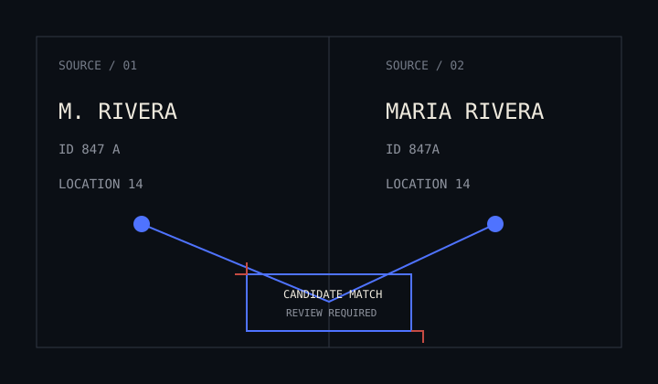
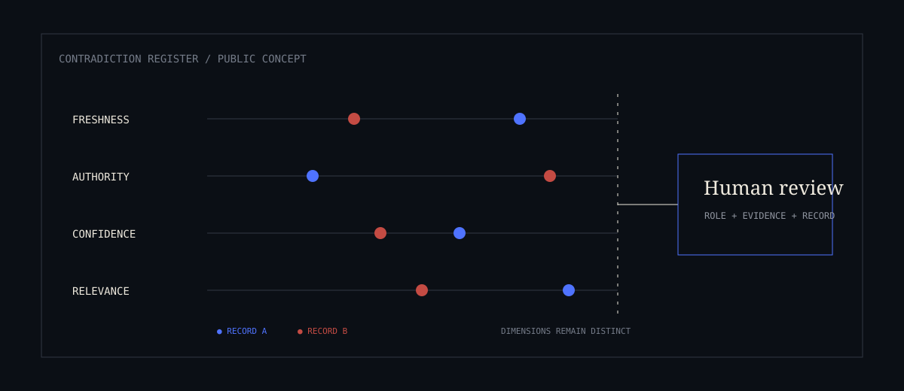
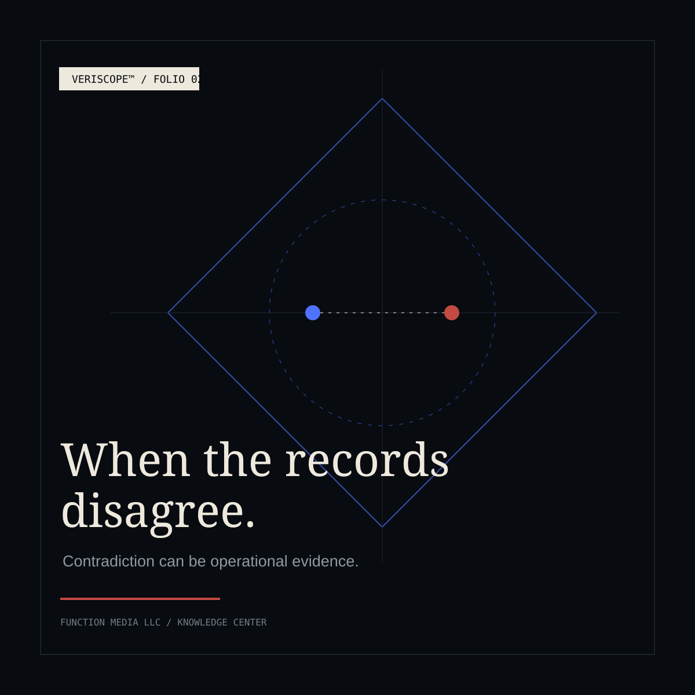

Two records.
One reality.
A name appears in one system with a middle initial and in another without it. A permit is active in a local register and expired in a second feed. One timestamp reflects when an event happened; another records when it was entered. None of these differences is dramatic on its own. Together, they can change what an authorized reviewer believes is true.
Conventional data work often treats disagreement as friction. The desired state is a single clean field: one identity, one date, one status. That goal makes sense for routine reporting. In consequential work, however, silent cleanup can destroy context. A contradiction may mark a stale source, a delayed update, a contested identity, a process failure, or a meaningful change in the underlying world.
The design question is therefore not simply, “Which value should the system keep?” It is, “What must remain visible so that a qualified person can understand the choice?”
Identity
The same entity, described differently.
Names, aliases, addresses, identifiers, and organizational relationships rarely arrive in one consistent form. A useful system can propose that records refer to the same entity. A responsible system also preserves the features that supported that proposal—and the ones that argued against it.
Entity resolution should reduce clerical burden without turning resemblance into certainty. A shared address may be decisive in one context and incidental in another. A reviewer needs the candidate match, the basis for it, and an accessible path back to each original record.

Time
The clocks are answering different questions.
A transaction time, publication time, effective date, ingestion time, and last-modified time may all be valid. Flatten them into a single “date,” and the system can manufacture a sequence that never occurred.
Temporal disagreement deserves explicit labels. The reviewer should be able to distinguish when the underlying event occurred, when a source reported it, and when the platform received it. That separation can reveal a lagging feed, an amended record, or an event that only looks out of order.
Status
“Current” depends on source and moment.
Status fields invite false simplicity. Open or closed. Active or inactive. Cleared or pending. Yet two authorized systems can disagree because they update on different schedules, apply different rules, or describe different stages of the same process.
Automatically choosing the latest timestamp may still be wrong if the newest record is a correction to an earlier period or comes from a source without authority over the decision. The useful output is not a blended label. It is a visible status conflict, accompanied by source, timing, and authority context.
Provenance
Authority can disagree with recency.
Provenance is more than a citation. It tells the system—and eventually the reviewer—where information came from, what transformations occurred, and what limits travel with it. Two records may conflict because one is official but slow, while the other is timely but provisional.
Those qualities should not be compressed into a single universal score. Confidence, source authority, freshness, and relevance are different dimensions. Keeping them separate helps a reviewer reason about the situation rather than accept a machine-produced verdict.

The cleanest record can be the one that hides the most.
A single field is easy to sort, filter, and display. It can also conceal the branch where evidence diverged. In high-stakes environments, that lost branch may explain the entire case.
Do not collapse without a traceA reviewable posture toward contradiction.
The objective is not to preserve every inconsistency forever. It is to prevent premature certainty—and to make resolution an accountable act rather than a hidden side effect.
Keep the competing records
Retain source values separately until the system or reviewer has a defensible basis to relate, supersede, or reject them.
Expose the conditions
Show provenance, timing, authority, and transformation history near the conflict—not in a remote technical log.
Send the right conflict to the right role
Role-based access and domain rules should govern who can see, resolve, annotate, or escalate a discrepancy.
Make resolution inspectable
Capture the selected outcome, rationale, reviewer, time, and prior state so later readers can reconstruct what changed.

What the reviewer should see.
A review interface should not force a person to infer the existence of disagreement from scattered screens. The contradiction itself should be a first-class object: competing values, original sources, time semantics, supporting relationships, confidence indicators, and the next permitted actions.
That does not mean exposing every internal field. Good operational design reduces noise while preserving the path to evidence. The reviewer first sees the consequential difference, then can expand the record history and source lineage as needed.
From incoming records to accountable resolution.
VERISCOPE™ is being developed around an evidence-centered architecture for complex operational environments. At a high level, that means multi-source ingestion and normalization; identity and entity resolution; evidence-graph construction; provenance and lineage preservation; confidence-aware reasoning and signal detection; role-based access; human review; and immutable auditability.
The important behavior is not that every input becomes one answer. It is that the system can connect related evidence, preserve meaningful disagreement, surface the conditions around a conflict, and support an authorized person in reaching a traceable conclusion.
One platform family, mission-specific technologies.
VERISCOPE™ by Function Media LLC is the primary intelligence platform. VERISCOPE DEFENSE™, VERISCOPE CYBER™, and VERISCOPE JURIS™ are mission-specific technologies within that family. Each environment brings different records, permissions, risks, and professional standards; they are not interchangeable templates.
This article describes a design principle, not a deployment claim. Function Media does not represent these technologies as government-approved, certified, or deployed with any named institution unless expressly stated.